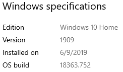

<!-- MHonArc v2.6.19+ -->
<!--X-Subject: Re: [NCDXC Chat] Windows Update hosing sound settings -->
<!--X-From-R13: &#60;obo.j6bcbNtznvy.pbz> -->
<!--X-Date: Fri, 10 Apr 2020 12:37:21 &#45;0500 -->
<!--X-Message-Id: 012801d60f5e$aee69da0$0cb3d8e0$@gmail.com -->
<!--X-Content-Type: multipart/related -->
<!--X-Reference: CAOJjquju4BLAy4D8kBDdmV&#45;E32VjMfk29=kfoP_eHEpH7gqA8g@mail.gmail.com -->
<!--X-Reference: 6176980B&#45;7773&#45;4399&#45;AB93&#45;5D823FCC981A@tier44.com -->
<!--X-Reference: CAOJjquhuhjU8Gezs=m5LSb5GCu2MqSh_8PjSNRwJjyJuEt7DQw@mail.gmail.com -->
<!--X-Reference: CAOmNKG+&#45;UhjMZYOjk1xt5&#45;Tc2ghxet_cSx51ovg736xKQyt3=A@mail.gmail.com -->
<!--X-Derived: pngubCzMgPGs6.png -->
<!--X-Derived: pngYFA_KVbKdc.png -->
<!--X-Head-End-->
<!DOCTYPE HTML PUBLIC "-//W3C//DTD HTML 4.01 Transitional//EN"
        "http://www.w3.org/TR/html4/loose.dtd">
<html>
<head>
<title>Re: [NCDXC Chat] Windows Update hosing sound settings</title>
<link rev="made" href="mailto:bob.w6opo@gmail.com">
</head>
<body>
<!--X-Body-Begin-->
<!--X-User-Header-->
<!--X-User-Header-End-->
<!--X-TopPNI-->
<hr>
[<a href="msg19512.html">Date Prev</a>][<a href="msg19514.html">Date Next</a>][<a href="msg19498.html">Thread Prev</a>][<a href="msg19514.html">Thread Next</a>][<a href="maillist.html#19513">Date Index</a>][<a href="threads.html#19513">Thread Index</a>]
<!--X-TopPNI-End-->
<!--X-MsgBody-->
<!--X-Subject-Header-Begin-->
<h1>Re: [NCDXC Chat] Windows Update hosing sound settings</h1>
<hr>
<!--X-Subject-Header-End-->
<!--X-Head-of-Message-->
<ul>
<li><em>To</em>: &quot;'NCDXC Reflector'&quot; &lt;<a href="mailto:chat%40ncdxc.org">chat@ncdxc.org</a>&gt;</li>
<li><em>Subject</em>: Re: [NCDXC Chat] Windows Update hosing sound settings</li>
<li><em>From</em>: &lt;<a href="mailto:bob.w6opo%40gmail.com">bob.w6opo@gmail.com</a>&gt;</li>
<li><em>Date</em>: Fri, 10 Apr 2020 10:37:18 -0700</li>
<li><em>Dkim-signature</em>: v=1; a=rsa-sha256; c=relaxed/relaxed; d=gmail.com; s=20161025;	h=from:to:references:in-reply-to:subject:date:message-id:mime-version	:thread-index:content-language;	bh=xy5qY1fW3ZADYrqx0MNh8zOTKkeFuqVnheanC2Swaow=;	b=MpCIFp2vmXdjlEe8+b442zpaw1q33bSy+KBOdFjQr5yH8nCIau7jfmNp0zgJ3NCwSo	3+bdbxEvVUro4Jkg9AwXiyagyDbd/8SSGDZCkXbyNvd8wy8mGlf2kpQGGqgj2GgJSTW+	BindxfeeaCXhoca3NCpsYuIVWD/PJ/bbT5Fh2+Z0dPmwDIM+MBqKK9PWi4VcZybZ07QX	x41MQUnXDZyu2y06cXjc2/cCTPBywuR1Aj7Gck/Vzge1EqS1zkY6bHiK3I8c4iFAy7oO	5aLAmC0j8ekAGhgSzqHAz+5qdrb1g0A/Yf3sDVCNYdacoqKNyEjJwUb7WdYNPLd0fHgB	wU/w==</li>
<li><em>In-reply-to</em>: &lt;CAOmNKG+-UhjMZYOjk1xt5-Tc2ghxet_cSx51ovg736xKQyt3=A@mail.gmail.com&gt;</li>
<li><em>List-archive</em>: &lt;<a href="http://mail.ncdxc.org/mailman/private/chat_ncdxc.org/">http://mail.ncdxc.org/mailman/private/chat_ncdxc.org/</a>&gt;</li>
<li><em>List-help</em>: &lt;<a href="mailto:chat-request@ncdxc.org?subject=help">mailto:chat-request@ncdxc.org?subject=help</a>&gt;</li>
<li><em>List-id</em>: NCDXC Discussion List &lt;chat.ncdxc.org&gt;</li>
<li><em>List-post</em>: &lt;<a href="mailto:chat@ncdxc.org">mailto:chat@ncdxc.org</a>&gt;</li>
<li><em>List-subscribe</em>: &lt;<a href="http://mail.ncdxc.org/mailman/listinfo/chat_ncdxc.org">http://mail.ncdxc.org/mailman/listinfo/chat_ncdxc.org</a>&gt;,	&lt;<a href="mailto:chat-request@ncdxc.org?subject=subscribe">mailto:chat-request@ncdxc.org?subject=subscribe</a>&gt;</li>
<li><em>List-unsubscribe</em>: &lt;<a href="http://mail.ncdxc.org/mailman/options/chat_ncdxc.org">http://mail.ncdxc.org/mailman/options/chat_ncdxc.org</a>&gt;,	&lt;<a href="mailto:chat-request@ncdxc.org?subject=unsubscribe">mailto:chat-request@ncdxc.org?subject=unsubscribe</a>&gt;</li>
<li><em>References</em>: &lt;CAOJjquju4BLAy4D8kBDdmV-E32VjMfk29=kfoP_eHEpH7gqA8g@mail.gmail.com&gt;	&lt;<a href="msg19451.html">6176980B-7773-4399-AB93-5D823FCC981A@tier44.com</a>&gt;	&lt;CAOJjquhuhjU8Gezs=m5LSb5GCu2MqSh_8PjSNRwJjyJuEt7DQw@mail.gmail.com&gt;	&lt;CAOmNKG+-UhjMZYOjk1xt5-Tc2ghxet_cSx51ovg736xKQyt3=A@mail.gmail.com&gt;</li>
<li><em>Thread-index</em>: AQIQaLw137UGFzMpfwNevrtMl8T0ZAM28G3IAYKOAacB1FsOO6fJejTw</li>
</ul>
<!--X-Head-of-Message-End-->
<!--X-Head-Body-Sep-Begin-->
<hr>
<!--X-Head-Body-Sep-End-->
<!--X-Body-of-Message-->
<table width="100%"><tr><td style="a:link { color: blue } a:visited { color: purple } "><div class=WordSection1><p class=MsoNormal><span style='font-size:12.0pt;font-family:"Arial",sans-serif'>I have almost the same configuration and experience Bob N6TV described.&#xA0; No issues here with any of the Windows upgrades.&#xA0; BTW my OS is HOME not Pro.&#xA0; <o:p></o:p></span></p><p class=MsoNormal><span style='font-size:12.0pt;font-family:"Arial",sans-serif'><o:p>&nbsp;</o:p></span></p><p class=MsoNormal><span style='font-size:12.0pt;font-family:"Arial",sans-serif'>Between my wife and I, I support four PC&#x2019;s.&#xA0; Two desk tops and 2 lap tops all with the same OS and release status.<o:p></o:p></span></p><p class=MsoNormal><span style='font-size:12.0pt;font-family:"Arial",sans-serif'><o:p>&nbsp;</o:p></span></p><p class=MsoNormal><span style='font-size:12.0pt;font-family:"Arial",sans-serif'>The desktop I use for everything is here on the operating desk next to the TS-990.&#xA0; Due to all the other &#x201C;stuff&#x201D; I have there are nine USB connections to the PC.&#xA0; <o:p></o:p></span></p><p class=MsoNormal><span style='font-size:12.0pt;font-family:"Arial",sans-serif'><o:p>&nbsp;</o:p></span></p><p class=MsoNormal><span style='font-size:12.0pt;font-family:"Arial",sans-serif'>I&#x2019;m simply not having any of the trouble being talked about.&#xA0; No clue why, just don&#x2019;t.<o:p></o:p></span></p><p class=MsoNormal><span style='font-size:12.0pt;font-family:"Arial",sans-serif'><o:p>&nbsp;</o:p></span></p><p class=MsoNormal><span style='font-size:12.0pt;font-family:"Arial",sans-serif'></span><span style='font-size:12.0pt;font-family:"Arial",sans-serif'><o:p></o:p></span></p><p class=MsoNormal><span style='font-size:12.0pt;font-family:"Arial",sans-serif'><o:p>&nbsp;</o:p></span></p><p class=MsoNormal><span style='font-size:12.0pt;font-family:"Arial",sans-serif'></span><span style='font-size:12.0pt;font-family:"Arial",sans-serif'><o:p></o:p></span></p><p class=MsoNormal><span style='font-size:12.0pt;font-family:"Arial",sans-serif'>73,<o:p></o:p></span></p><p class=MsoNormal><span style='font-size:12.0pt;font-family:"Arial",sans-serif'>Bob &#x2013; W6OPO<o:p></o:p></span></p><p class=MsoNormal><span style='font-size:12.0pt;font-family:"Arial",sans-serif'><o:p>&nbsp;</o:p></span></p><div style='border:none;border-top:solid #E1E1E1 1.0pt;padding:3.0pt 0in 0in 0in'><p class=MsoNormal><b>From:</b> Chat &lt;chat-bounces@ncdxc.org&gt; <b>On Behalf Of </b>Bob Wilson, N6TV via Chat<br><b>Sent:</b> Wednesday, April 8, 2020 8:40 PM<br><b>To:</b> Paul N6PSE &lt;pauln6pse@gmail.com&gt;<br><b>Cc:</b> NCDXC Discussion List &lt;chat@ncdxc.org&gt;<br><b>Subject:</b> Re: [NCDXC Chat] Windows Update hosing sound settings<o:p></o:p></p></div><p class=MsoNormal><o:p>&nbsp;</o:p></p><div><p class=MsoNormal>I cannot replicate any problems with Windows Update here.&nbsp; It just worked fine on&nbsp;two Windows 10 Pro computers.&nbsp; I see no changes or issues with my FTDI virtual serial ports, my microHAM Router virtual serial ports (Eltima), the&nbsp;microHAM USB Audio CODEC, or the USB Voice CODEC.&nbsp; Everything seems to be fine.<o:p></o:p></p><div><p class=MsoNormal><o:p>&nbsp;</o:p></p></div><div><p class=MsoNormal>Windows Update listed this as an &quot;Optional&quot; update, which I applied anyway:<o:p></o:p></p></div><div><p class=MsoNormal><o:p>&nbsp;</o:p></p></div><blockquote style='margin-left:30.0pt;margin-right:0in'><div><p class=MsoNormal>2020-03 Cumulative Update for Windows 10 Version 1909 x64-based Systems (KB4541335).<o:p></o:p></p></div></blockquote><div><p class=MsoNormal><o:p>&nbsp;</o:p></p></div><div><p class=MsoNormal>Is that&nbsp;the one giving&nbsp;you guys troubles?<o:p></o:p></p></div><div><p class=MsoNormal><o:p>&nbsp;</o:p></p></div><div><p class=MsoNormal>I don't use VSPE or similar (no Flex stuff) and I don't have any Prolific USB-to-Serial device drivers installed on either system, if that's related.<o:p></o:p></p><div><p class=MsoNormal><br clear=all><o:p></o:p></p><div><div><p class=MsoNormal>73,<o:p></o:p></p><div><p class=MsoNormal>Bob, N6TV<o:p></o:p></p></div></div></div><p class=MsoNormal><o:p>&nbsp;</o:p></p></div></div></div><p class=MsoNormal><o:p>&nbsp;</o:p></p><div><div><p class=MsoNormal>On Mon, Apr 6, 2020 at 6:14 PM Paul N6PSE via Chat &lt;<a rel="nofollow" href="mailto:chat@ncdxc.org">chat@ncdxc.org</a>&gt; wrote:<o:p></o:p></p></div><blockquote style='border:none;border-left:solid #CCCCCC 1.0pt;padding:0in 0in 0in 6.0pt;margin-left:4.8pt;margin-right:0in'><div><p class=MsoNormal>Keith, your experience is quite similar to everything we are seeing at work and I am seeing in various Ham Radio forums.&nbsp;<o:p></o:p></p><div><p class=MsoNormal><o:p>&nbsp;</o:p></p></div><div><p class=MsoNormal>Everyone Document what you want to restore later.<o:p></o:p></p></div><div><p class=MsoNormal><o:p>&nbsp;</o:p></p></div><div><p class=MsoNormal>Paul N6PSE<o:p></o:p></p></div></div><p class=MsoNormal><o:p>&nbsp;</o:p></p><div><div><p class=MsoNormal>On Mon, Apr 6, 2020 at 6:06 PM Keith Heimbold &lt;<a rel="nofollow" href="mailto:keith@tier44.com" target="_blank">keith@tier44.com</a>&gt; wrote:<o:p></o:p></p></div><blockquote style='border:none;border-left:solid #CCCCCC 1.0pt;padding:0in 0in 0in 6.0pt;margin-left:4.8pt;margin-right:0in'><p class=MsoNormal style='margin-bottom:12.0pt'>Hi Paul,<br><br>I just did a Microsoft update and it totally screwed up my virtual comports. I ended up replacing my hard drive and did three Acronis disk cleanups, uninstalled microham urouter, and it is still not working as previous. <br><br>The one thing that was super frustrating was that I was unable to delete them in device manager. They would reappear after a restart. Definitely need to disable automatic updates.<br><br>Thanks for letting us all know.<br><br>73,<br><br>Keith <br>Nz5f <br><br>Sent from my iPhone<br><br>&gt; On Apr 6, 2020, at 7:27 PM, Paul N6PSE via Chat &lt;<a rel="nofollow" href="mailto:chat@ncdxc.org" target="_blank">chat@ncdxc.org</a>&gt; wrote:<br>&gt; <br>&gt; &#xFEFF;<br>&gt; NCDXC friends, <br>&gt; <br>&gt; I work in IT for a large company. I am also active on several Ham Radio related forums. <br>&gt; <br>&gt; I am learning that the next Microsoft Windows Update is a real booger that severely hoses virtual com ports and sound card settings. <br>&gt; <br>&gt; You may want to document your virtual com ports and sound settings now and this update seems to obliterate everything. <br>&gt; <br>&gt; You can disconnect from the Internet or turn off automatic updates to delay this update but it is really best to document your settings now. <br>&gt; <br>&gt; Paul N6PSE<br>&gt; _______________________________________________<br>&gt; Chat mailing list<br>&gt; <a rel="nofollow" href="mailto:Chat@ncdxc.org" target="_blank">Chat@ncdxc.org</a><br>&gt; <a rel="nofollow" href="http://mail.ncdxc.org/mailman/listinfo/chat_ncdxc.org" target="_blank">http://mail.ncdxc.org/mailman/listinfo/chat_ncdxc.org</a><o:p></o:p></p></blockquote></div><p class=MsoNormal>_______________________________________________<br>Chat mailing list<br><a rel="nofollow" href="mailto:Chat@ncdxc.org" target="_blank">Chat@ncdxc.org</a><br><a rel="nofollow" href="http://mail.ncdxc.org/mailman/listinfo/chat_ncdxc.org" target="_blank">http://mail.ncdxc.org/mailman/listinfo/chat_ncdxc.org</a><o:p></o:p></p></blockquote></div></div></td></tr></table>
<!--X-Body-of-Message-End-->
<!--X-MsgBody-End-->
<!--X-Follow-Ups-->
<hr>
<ul><li><strong>Follow-Ups</strong>:
<ul>
<li><strong><a name="19514" href="msg19514.html">Re: [NCDXC Chat] Windows Update hosing sound settings</a></strong>
<ul><li><em>From:</em> Keith Heimbold &lt;keith@tier44.com&gt;</li></ul></li>
</ul></li></ul>
<!--X-Follow-Ups-End-->
<!--X-References-->
<ul><li><strong>References</strong>:
<ul>
<li><strong><a name="19450" href="msg19450.html">[NCDXC Chat] Windows Update hosing sound settings</a></strong>
<ul><li><em>From:</em> Paul N6PSE &lt;pauln6pse@gmail.com&gt;</li></ul></li>
<li><strong><a name="19451" href="msg19451.html">Re: [NCDXC Chat] Windows Update hosing sound settings</a></strong>
<ul><li><em>From:</em> Keith Heimbold &lt;keith@tier44.com&gt;</li></ul></li>
<li><strong><a name="19452" href="msg19452.html">Re: [NCDXC Chat] Windows Update hosing sound settings</a></strong>
<ul><li><em>From:</em> Paul N6PSE &lt;pauln6pse@gmail.com&gt;</li></ul></li>
<li><strong><a name="19497" href="msg19497.html">Re: [NCDXC Chat] Windows Update hosing sound settings</a></strong>
<ul><li><em>From:</em> &quot;Bob Wilson, N6TV&quot; &lt;n6tv@arrl.net&gt;</li></ul></li>
</ul></li></ul>
<!--X-References-End-->
<!--X-BotPNI-->
<ul>
<li>Prev by Date:
<strong><a href="msg19512.html">Re: [NCDXC Chat] I can now do DXCC 160M Field Checking</a></strong>
</li>
<li>Next by Date:
<strong><a href="msg19514.html">Re: [NCDXC Chat] Windows Update hosing sound settings</a></strong>
</li>
<li>Previous by thread:
<strong><a href="msg19498.html">Re: [NCDXC Chat] Windows Update hosing sound settings</a></strong>
</li>
<li>Next by thread:
<strong><a href="msg19514.html">Re: [NCDXC Chat] Windows Update hosing sound settings</a></strong>
</li>
<li>Index(es):
<ul>
<li><a href="maillist.html#19513"><strong>Date</strong></a></li>
<li><a href="threads.html#19513"><strong>Thread</strong></a></li>
</ul>
</li>
</ul>

<!--X-BotPNI-End-->
<!--X-User-Footer-->
<!--X-User-Footer-End-->
</body>
</html>
